Questão 1 · Pediatria · Diagnóstico Nutricional · 4000184730Criança de 1 ano e 6 meses interna na enfermaria de pediatria para tratamento de pneumonia, ao verificar seus dados antropométricos nota-se que apresenta peso para estatura maior que o escore Z+1 e menor que escore Z+2. O peso para idade se localiza no mesmo escore (maior que o escore Z+1 e menor que escore Z+2). Podemos a rmar que este paciente apresenta:
A Eutrofia
B Obesidade
C Sobrepeso
D Risco de sobrepeso
Questão 2 · Pediatria · Diagnóstico Nutricional · 4000183880Criança de 4 anos de idade, sexo feminino, vem ao atendimento ambulatorial para consulta de rotina. Durante a avaliação nutricional, observam-se os seguintes índices antropométricos: escore Z peso/idade= 2,1 DP, escore Z estatura/idade= 0,5 DP, escore Z IMC/idade= 1,9 DP. De acordo com a classificação da OMS 2006, a criança tem os seguintes diagnósticos nutricionais antropométricos,
A peso adequado para a idade, baixa estatura para a idade, obesidade.
B peso adequado para a idade, baixa estatura para a idade, eutrofia.
C peso elevado para a idade, estatura adequada para a idade, risco de sobrepeso.
D peso elevado para a idade, estatura adequada para a idade, sobrepeso.
Questão 3 · Pediatria · Diagnóstico Nutricional · 4000183466Em consulta de puericultura, a mãe de um pré-escolar masculino de 4 anos questiona ao pediatra sobre o peso atual do seu lho, pois acredita que ele está „magro dados antropométricos na curva da OMS para IMC, apropriada para sexo e idade do menor, estando este entre os percentis 85 e 97. Podemos a rmar que, de acordo com o estado nutricional, como este pré-escolar é classificado de acordo com os dados acima, sabendo que, na avaliação da altura, ele encontra-se no percentil 50?
A Eutrófico
B Peso adequado para a idade
C Risco de sobrepeso
D Sobrepeso
E Obesidade
Questão 4 · Pediatria · Gráf icos OMS Classif icação nutricional · 4000183377O perímetro cefálico aumenta no primeiro trimestre de vida, na criança hígida nascida a termo, em cm/mês:
A 0,5.
B 1.
C 1,5.
D 2.
Questão 5 · Pediatria · Diagnóstico Nutricional · 4000183369Paciente do sexo feminino, de 1 ano e 10 meses, apresenta 13,5 Kg de peso e IMC de 17,6. Considerando essas medidas isoladas, colocadas nos gráficos da Caderneta da Criança na Figura 3 abaixo (pontos azuis), você a classifica como apresentando peso ________ para a idade e IMC _________. Assinale a alternativa que preenche, correta e respectivamente, as lacunas do trecho acima.
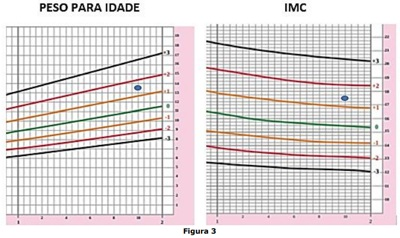
A adequado – com risco de sobrepeso
B elevado – adequado
C adequado – adequado
D elevado – com risco de sobrepeso
Questão 6 · Pediatria · Diagnóstico Nutricional · 4000182777Que cuidado, dentre os abaixo, deve-se ter ao plotar, nos gráficos contidos na Caderneta da Criança, as medidas antropométricas de uma criança de 20 meses, nascida com 35 semanas de idade gestacional (pré-termo)?
A Utilizar as curvas de crescimento para prematuros.
B Utilizar as curvas de crescimento para crianças de 0-2 anos, sem ajustes.
C Utilizar as curvas de crescimento para crianças de 0-2 anos, descontando da idade cronológica 2 semanas.
D Utilizar as curvas de crescimento para crianças de 0-2 anos, descontando da idade cronológica 5 semanas.
Questão 8 · Pediatria · Diagnóstico Nutricional · 4000181300Criança em fase escolar do sexo feminino, com 6 anos de idade, é atendida em uma consulta pediátrica de rotina. Após a antropometria, verifica-se, pela interpretação da curva de crescimento de referência, um peso para idade no escore-z: +2,03, estatura para idade no escore-z: +0,95 e índice de massa corporal no escore-z: +2,08. De acordo com os critérios vigentes do Ministério da Saúde, assinale a adequada classificação nutricional dessa criança.
A Peso adequado para idade e risco para sobrepeso.
B Peso adequado para idade e risco para obesidade.
C Peso elevado para idade e risco de obesidade.
D Peso elevado para idade e sobrepeso.
E Peso elevado para idade e obesidade.
Questão 9 · Pediatria · Diagnóstico Nutricional · 4000177549Mãe chega ao consultório médico preocupada por suspeitar que seu lho, adolescente de 12 anos, seja magro demais, além de perceber que ele é menor do que os colegas da escola. A partir da avaliação nutricional, considerando o referencial OMS 2007, foram observados os seguintes resultados para os índices antropométricos em escore Z: estatura para idade (E/I) = -1,8DP e Índice de Massa Corpórea para a Idade (IMC/I) = -2,1DP. Considerando esses dados, o adolescente tem
A estatura adequada para idade e magreza.
B muito baixa estatura para idade e magreza.
C baixa estatura para idade e magreza acentuada.
D estatura adequada para idade e magreza acentuada.
Questão 10 · Diagnóstico Nutricional · 4000169943QUESTÃO ADAPTADA Na classificação nutricional nas crianças menores de 5 anos, recomendada pelo MS, os intervalos de escore-z para: peso adequado para a idade, quando se utiliza o índice antropométrico peso-para-idade; e eutro a, quando se utiliza o índice antropométrico peso-para-estatura, são, correta e respectivamente:
A z = +1 a z = +2; z = +1 a z = +2.
B z = –2 a z = +2; z= –2 a z = +1.
C z = –1 a z= +1; z = +1 a z = +2.
D z = +2 a z = +3; z = +2 a z = +3.
E z = –1 a z = +1; z = –1 a z = +1.
Questão 11 · Pediatria · Gráf icos OMS Classif icação nutricional · 4000168265Dois irmãos, um de 3 e outro de 6 anos, apresentaram escore Z para IMC/Idade de 1,5. Qual a classificação antropométrica do estado nutricional de ambos os irmãos?
A Adequada para as duas crianças.
B Risco de sobrepeso para as duas crianças.
C Adequada para a criança de 3 anos e sobrepeso para a de 6 anos.
D Risco de sobrepeso para a criança de 3 anos e sobrepeso para a de 6 anos.
Questão 12 · Pediatria · Diagnóstico Nutricional · 4000167819Um paciente de 2 anos e 3 meses de idade foi levado ao ambulatório de pediatria pela mãe, pois ela está preocupada com um “caroço” no pescoço do lho, que ela notou há cinco meses. Relatou que o lho é bastante ativo, que se alimenta bem, sempre ganhou peso, mas fala pouco e palavras difíceis de compreender. Ademais, há muito tempo apareceram alguns machucados no couro cabeludo dele, que o menino coça bastante e tem algumas crostas. Ao exame físico, constataram- se altura = 90 cm (escore z 0), peso = 12,300 kg (escore z entre 0 e -2), FC = 120 bpm, FR = 26 irpm e SatO2 = 97% em AA. No couro cabeludo, há várias lesões com crostas melicéricas e presença de linfonodo retroauricular medindo 1,5 cm, móvel, broelástico, indolor à palpação. Observaram-se oroscopia, dentes em bom estado, sem lesões, sem frênulo lingual, otoscopia, com membrana timpânica translúcida, sem abaulamentos ou retrações e ausculta cardíaca, BNF, RR, 2t, sem sopro. Veri caram-se, ainda, ausculta pulmonar, MVUD, sem RA, abdome, RHA+, depressível, sem megalias, indolor à palpação e genitália com testículos em bolsa escrotal e mose. Com base nesse caso clínico e nos conhecimentos médicos correlatos, julgue o item a seguir. É importante realizar investigação dos hábitos alimentares dessa criança, visto que o ideal seria estar com peso acima do escore z 0.
A Certo.
B Errado.
Questão 13 · Pediatria · Diagnóstico Nutricional · 4000166294Menino, 4 anos e 4 meses, apresenta escore Z de estatura para idade (E/I) de + 0,86 e de Índice de Massa Corporal de + 2,78. Com esses dados, o diagnóstico nutricional é de
A risco de sobrepeso.
B sobrepeso.
C eutrofia.
D obesidade.
Questão 14 · Pediatria · Diagnóstico Nutricional · 4000166144Uma adolescente de catorze anos de idade foi à consulta de rotina sem queixas. Refere que, durante todo o período da pandemia, permaneceu em casa, assistindo às aulas de forma com as amigas. Na avaliação pondero-estatural: peso = 68 kg e altura = 1,50 m. Com base nesse caso hipotético e na curva acima, assinale a alternativa que apresenta o diagnóstico nutricional para a adolescente.
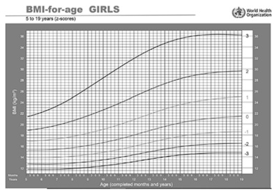
A risco de sobrepeso
B risco de obesidade
C sobrepeso
D obesidade
E obesidade grave
Questão 15 · Gráf icos OMS Classif icação nutricional · 4000171397As microcefalias podem ser congênitas, presentes ao nascimento, de causa metabólica, genética ou adquirida. Qual a definição de microcefalia?
A A microcefalia se define quando o perímetro craniano está abaixo de 1 Desvio Padrão (DP) para a idade e sexo.
B A microcefalia se define quando o perímetro craniano está abaixo de 2 Desvios Padrão (DP) para a idade e sexo.
C A microcefalia se define quando o perímetro craniano está abaixo de 3 Desvios Padrão (DP) para a idade e sexo.
D A microcefalia se define quando o perímetro craniano está abaixo de 4 Desvios Padrão (DP) para a idade e sexo.
Questão 16 · Pediatria · Diagnóstico Nutricional · 4000146362Na consulta de puericultura de uma criança de 4 anos de idade, os pais não têm queixas e relatam uma alimentação adequada em quantidade e composição. O desenvolvimento neuropsicomotor está adequado, e, ao exame físico, a criança apresenta peso no escore z entre 0 e + 1, estatura entre o escore z –1 e –2, índice de massa corpórea (IMC) no escore z entre + 2 e + 3 nas curvas da Organização Mundial da Saúde para a sua idade e sexo. A classificação nutricional dessa criança é:
A eutrofia e baixa estatura.
B risco para sobrepeso e baixa estatura.
C sobrepeso e estatura normal para idade.
D obesidade e baixa estatura.
E obesidade grave e estatura normal para a idade.
Questão 17 · Pediatria · Diagnóstico Nutricional · 4000146046Mãe traz lha de 10 meses de idade à consulta e diz que está orgulhosa, pois ela come bem e todos a acham “fo nha”. Criança nascida a termo, em aleitamento materno exclusivo até os 6 meses, atualmente mantém aleitamento e alimentação complementar. Mãe nega oferta de alimentos adoçados ou industrializados e a rma que a criança “nunca está satisfeita”. Nega comorbidades conhecidas. Nega casos de obesidade ou doenças endocrinológicas na família. Ao exame: lactente sem dismor smos faciais, ativa, normocorada, hidratada, eupneica. Ausculta cardiopulmonar e exame abdominal sem alterações. Estatura: 70cm; peso: 12kg; IMC = 23 kg/m². Analisando o caso e o gráfico abaixo, responda as questões a seguir: Conforme gráfico da OMS de índice de massa corporal versus idade, qual é a classificação nutricional desta paciente?
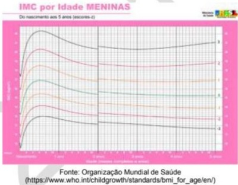
A Sobrepeso
B Obesidade grave
C Obesidade
D Eutrófica para a idadeS
Questão 18 · Diagnóstico · Desnutrição · Pediatria · 4000144746Qual dos índices antropométricos listados indica dé cit nutricional crônico em crianças e adolescentes, quando abaixo de dois desvios-padrão da média da população de referência para idade e sexo?
A Estatura para idade.
B Indice de massa corporal para idade.
C Peso para estatura.
D Perímetro cefálico para idade.
Questão 19 · Pediatria · Diagnóstico Nutricional · 4000144553Assinale a alternativa que apresenta a técnica correta de aferição da altura em criança maior que 2 anos
A A criança deve estar deitada sobre uma mesa antropométrica ou com o auxílio de uma régua antropométrica sobre uma superfície plana.
B A criança deve estar em pé, em balança plataforma com antropômetro ou em antropômetro de parede.
C A criança deve estar sentada, usar uma fita não distensível e passá-la pela testa, logo acima dos olhos, seguindo por cima das orelhas e pela proeminência occipital.
D A criança deve estar deitada, sendo utilizada uma fita não distensível.
Questão 20 · Pediatria · Diagnóstico Nutricional · 4000144181Menina, 8 meses de idade, é levada à Unidade Básica de Saúde, UBS, para consulta de rotina. Nasceu de parto natural a termo, pesando 3.300g; medindo 49cm e com Perímetro Cefálico medindo 34cm. Atualmente pesa 8.000g e mede 67,5cm (escore z: em ambos, entre -1 e +1). Está em aleitamento materno exclusivo. Considerando a velocidade de crescimento esperada para o Perímetro Cefálico, especi que qual deve ser, aproximadamente, o valor atual, nessa criança.
A 40 cm
B 42 cm
C 44 cm
D 46 cm
Questão 21 · Pediatria · Diagnóstico Nutricional · 4000144180Menina, 8 meses de idade, é levada à Unidade Básica de Saúde, UBS, para consulta de rotina. Nasceu de parto natural a termo, pesando 3.300g; medindo 49cm e com Perímetro Cefálico medindo 34cm. Atualmente pesa 8.000g e mede 67,5cm (escore z: em ambos, entre -1 e +1). Está em aleitamento materno exclusivo. Considerando o parâmetro “escore z”, adotado pela OMS, indique a classificação correta para o peso e a estatura dessa lactente.
A Ganho de peso e de estatura adequados.
B Ganho de peso e crescimento inadequados.
C Ganho de peso adequado e crescimento inadequado.
D Ganho de peso inadequado e crescimento adequado.
Questão 22 · Pediatria · Diagnóstico Nutricional · 4000140587Criança do sexo masculino, 6 anos de idade, chega à consulta pediátrica com a mãe preocupada por achar que seu lho não está nutricionalmente equilibrado. Ao serem verificadas as medidas antropométricas, foram observados os seguintes parâmetros: escore Z Peso/Idade = 2,1 DP, escore Z Estatura/Idade = -1,7 DP e escore Z índice de Massa Corpórea/Idade = 2,3 DP. De acordo com a classificação da OMS (Organização Mundial da Saúde), os diagnósticos nutricionais antropométricos dessa criança são
A peso elevado para a idade, estatura adequada para a idade e obesidade.
B peso adequado para a idade, baixa estatura para a idade e sobrepeso.
C peso elevado para a idade, estatura adequada para a idade e obesidade grave.
D peso adequado para a idade, baixa estatura para a idade e eutrofia.
Questão 23 · Pediatria · Gráf icos OMS Classif icação nutricional · 4000137963Na consulta de 4 anos de idade, Susi pesou 17,8 kg (escore-z entre 0 e +1), mediu 99 cm (escore-z entre −1 e 0). O escore- z do peso para estatura e o do IMC estavam entre +1 e +2. Segundo o Ministério da Saúde, a classificação nutricional de Susi é.
A eutrofia.
B magreza.
C obesidade.
D sobrepeso.
E risco de sobrepeso.
Questão 24 · Diagnóstico Nutricional · 4000129756Considere uma escolar, 6 anos e 3 meses, sexo feminino, que apresenta estatura 109 cm (escore Z – 1,45), peso 21,5 kg (escore Z + 0,25), e Índice de Massa Corpórea 18,1 kg/m² (escore Z + 1,49). Assinale a alternativa que apresenta adotados pelo Ministério da Saúde do Brasil.
A Estatura adequada para idade; Peso adequado para idade; Eutrofia.
B Baixa estatura para idade; Peso adequado para idade; Obesidade.
C Baixa estatura para idade; Peso elevado para idade; Risco de sobrepeso.
D Estatura adequada para idade; Peso elevado para idade; Sobrepeso.
E Estatura adequada para idade; Peso adequado para idade; Sobrepeso.
Questão 25 · Avaliação do Crescimento · 4000124381Lucas, 1 ano e 6 meses, vem para consulta pediátrica de rotina. A mãe queixa-se que seu lho “não come e não dorme”. Na antropometria: Peso: 11,5 kg (Z = 0,28); Altura: 78 cm (Z = - 1,9); IMC: 18,9 (Z = 1,9). Assinale a alternativa CORRETA.
A Peso adequado, eutrofia com altura adequada.
B Peso adequado, eutrofia com baixa estatura.
C Peso elevado, risco de sobrepeso com estatura adequada.
D Peso elevado, obesidade com estatura adequada.
E Peso adequado, risco de sobrepeso com estatura adequada.
Questão 26 · Diagnóstico Nutricional · 4000119880Paciente do sexo feminino, 9 anos de idade, é levada à Unidade Básica de Saúde para uma avaliação de rotina. A mãe está preocupada porque acha que a criança está comendo muito e engordando neste último ano. Nega outros problemas de saúde. Ao exame físico, paciente apresenta: Peso de 42 kg, entre o escore z 2 e 3 da curva da OMS, 2007. Estatura de 1,44 m, entre o escore z 1 e 2 da curva da OMS, 2007. Índice de Massa Corpórea (IMC) de 20,25, entre o escore z 1 e 2 da curva da OMS, 2007. Desenvolvimento puberal: M2 P1 pelos critérios de Tanner. A classificação nutricional dessa paciente é:
A Peso adequado para a idade, por estar no início da puberdade.
B Obesidade, por apresentar o peso entre o escore z 2 e 3.
C Obesidade, por apresentar o percentil do peso maior que o da altura.
D Alta estatura, por apresentar a estatura entre o escore z 1 e 2.
E Sobrepeso, por apresentar IMC entre o escore z 1 e 2.
Questão 27 · Avaliação do Crescimento · 4000119505Escore z é bastante utilizado em algumas áreas, em particular em nutrição. O que é o escore z?
A A variância da população.
B O número de erros padrão a partir da média da população.
C A média da população.
D O número de desvios padrão a partir da média da população.
Questão 28 · Diagnóstico Nutricional · 4000115176Menino, 4 anos de idade está em consulta ambulatorial de rotina. Realizadas as medidas antropométricas e colocadas nos referenciais da OMS, com os seguintes achados: Peso: entre o percentil 97 e o percentil 99,9; Estatura: entre o percentil 85 e o percentil 97; IMC: entre o percentil 85 e o percentil 97; A classificação nutricional deste paciente é:
A eutrofia.
B risco de sobrepeso.
C sobrepeso.
D obesidade.
E obesidade grave.
Questão 29 · Gráf icos OMS Classif icação nutricional · 4000104435Utilizando os gráficos de crescimento da Organização Mundial de Saúde (OMS, 2006/2007) e considerando seus pontos de corte, escolha a alternativa correta:
A Paciente com 2 anos de idade com escore Z peso ≥ +2 e < +3 é considerado como obesidade.
B Paciente com 3 anos de idade com escore Z IMC ≥ +1 e < +2 é considerado como sobrepeso.
C Paciente com 4 anos de idade com escore Z peso < -3 é considerado como magreza.
D Paciente com 7 anos de idade com escore Z IMC ≥ +3 e
Questão 30 · Puericultura Geral · Gráf icos OMS Classif icação nutricional · 4000047218Lactente masculino de 7 meses e 5 dias de vida, nascido a termo, é atendido pela primeira vez, no ambulatório de puericultura de um hospital de referência em Recife. A família mudou-se de uma cidade do interior para a capital, há poucos dias. No atendimento, além de questionar sobre o parto, alimentação, vacinação e desenvolvimento da criança, a médica pediatra percebeu anemia (2+/4+) como único achado significativo ao exame físico. Dados antropométricos ao nascimento: Peso: 2.750 g / Comprimento: 48 cm / Perímetro cefálico: 34 cm Dados antropométricos atuais: Peso e comprimento entre -1 e -2 DP das curvas da OMS de peso por idade em meninos e comprimento por idade em meninos, respectivamente. Em relação aos aspectos antropométricos do lactente, admitindo crescimento médio normal e mesmo sem verificar os gráficos de crescimento, é CORRETO afirmar que
A o perímetro cefálico esperado para o menor é aproximadamente de 40 cm no momento da consulta.
B com os dados fornecidos sobre o peso e comprimento atuais, o menor poderá encontrar-se com risco de sobrepeso na curva do IMC (índice de Massa Corpórea) da OMS.
C uma boa estimativa atual de peso para o menor, em função dos dados de nascimento e da consulta do 7º mês, é de aproximadamente 8.700 g.
D o menor apresenta baixa estatura para a idade, no momento da consulta, apesar de ter nascido com um comprimento adequado.
E pelos dados fornecidos, tanto o peso quanto o comprimento do menor encontram-se à esquerda da mediana das curvas de peso x idade e comprimento x idade para o sexo masculino, respectivamente.
Questão 31 · Diagnóstico Nutricional · 4000046155Paciente com 4 anos e 6 meses de vida vai a consulta com pediatra acompanhada pela sua mãe, que traz a queixa de que a lha está ""muito gordinha"" e isso a tem preocupado muito, pois há muitos casos de obesidade na família. Após realizar as medidas antropométricas dessa criança, o pediatra calculou o IMC e o plotou no gráfico de IMC x Idade da Organização Mundial de Saúde, situando-se o índice no Z escore = 2. Qual a classificação, conforme o Z escore, dessa criança?
A Obesidade grave
B Sobrepeso
C Obesidade
D Risco de sobrepeso
Questão 32 · Avaliação do Crescimento · 4000039206Mãe traz seu lho para consulta pediátrica, sexo masculino, 7 anos de idade, devido à preocupação com crescimento, desenvolvimento e estado nutricional apresentando os seguintes escores: Peso para idade Escore > Z+1 e < Z+2 IMC para idade Escore > Z-1 e < Z+1 Estatura para idade Escore > Z+2 e < Z+3. Qual o diagnóstico?
A Baixo peso para a idade, magreza e estaturaadequada para a idade.
B Peso adequado para a idade, eutrofia e estatura adequada para a idade.
C Baixo peso para a idade, magreza leve e estatura adequada para a idade.
D Peso adequado para a idade, magreza leve e alta estatura para a idade.
E Baixo peso para a idade, eutrofia e alta estatura para a idade.
Questão 33 · Diagnóstico Nutricional · 4000023892Um paciente de 5 anos de idade comparece em consulta de puericultura acompanhado pelos pais. Após ser calculado o índice de massa corporal (IMC) do paciente, observa-se que ele se encontra acima do escore Z + 3. A respeito desse caso clínico e com base nos conhecimentos médicos correlatos, julgue o item a seguir. O diagnóstico é de obesidade grave.
A Certo.
B Errado.
Questão 34 · Diagnóstico Nutricional · 4000013387Considerando esse gráfico, que apresenta os índices de massa corporal (IMC) dos indivíduos A, B e C, julgue o próximo item, com base nas normas do Sistema de Vigilância Alimentar e Nutricional do Ministério da Saúde. O indivíduo A tem obesidade grave.
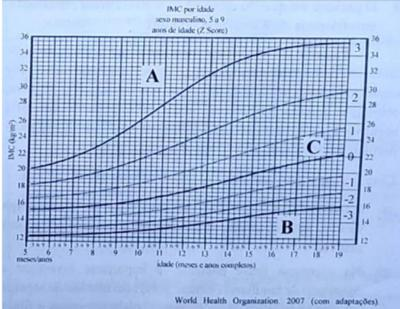
A Certo.
B Errado.
Questão 35 · Diagnóstico Nutricional · 4000013383Considerando esse gráfico, que apresenta os índices de massa corporal (IMC) dos indivíduos A, B e C, julgue o próximo item, com base nas normas do Sistema de Vigilância Alimentar e Nutricional do Ministério da Saúde. O indivíduo B tem subnutrição grave.
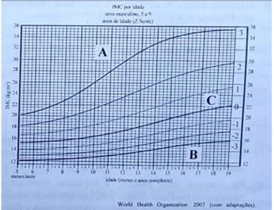
A Certo.
B Errado.
Questão 36 · Diagnóstico Nutricional · 4000013371Considerando esse gráfico, que apresenta os índices de massa corporal (IMC) dos indivíduos A, B e C, julgue o próximo item, com base nas normas do Sistema de Vigilância Alimentar e Nutricional do Ministério da Saúde. O indivíduo C tem peso adequado para sua altura.
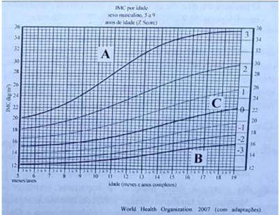
A Certo.
B Errado.
Questão 37 · Avaliação do Crescimento · Pediatria · 4000106221Qual dos seguintes parâmetros é consistente com um crescimento normal nos seis primeiros meses de vida?
A Aumentar a altura em 10 centímetros.
B Dobrar o peso de nascimento.
C Aumentar o perímetro cefálico em 0,5 cm por mês.
D Ganho de peso de 10 gramas por dia.
Questão 38 · Pediatria · Gráf icos OMS Classif icação nutricional · 4000105969Menino com 12 anos de idade está em seguimento de puericultura. Pesa 55 kg e mede 155 cm e está sendo avaliado em relação ao seu desenvolvimento ponderoestatural. Considerando a curva do Índice de Massa Corporal (OMS) apresentada abaixo, qual é a classificação nutricional desse paciente?
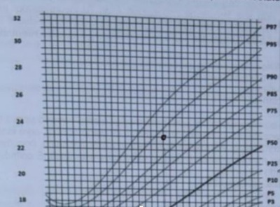
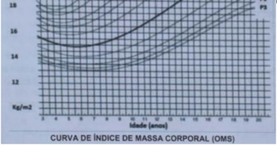
A Obesidade.
B Magreza.
C Eutrofia.
D Sobrepeso.
Questão 39 · Gráf icos OMS Classif icação nutricional · 4000102717Menino, 6 anos de idade, tem índice de massa corpórea (IMC) no percentil 90 da curva. Apresenta, portanto, diagnóstico de
A eutrofia.
B retardo de crescimento.
C sobrepeso.
D obesidade.
Questão 40 · Diagnóstico Nutricional · 4000102097O Ministério da Saúde adota as recomendações lançadas em 2006/ 2007 pela Organização Mundial de Saúde (OMS) sobre o uso de curvas de referência na avaliação do estado nutricional. De acordo com os pontos de corte preconizados pela OMS, assinale a alternativa correta em relação ao diagnóstico antropométrico:
A Na faixa etária de 0 – 5 anos incompletos, são considerados como obesidade osvalores de escore Z PESO > +2 e < + 3.
B Na faixa etária de 0 – 5 anos incompletos, são considerados como sobrepeso osvalores de escore Z Índice de Massa Corporal > +1 e < + 2.
C Na faixa etária de 0 – 5 anos incompletos, são considerados como magreza os valoresde escore Z Índice de Massa Corporal < -3.
D Na faixa etária de 5 – 20 anos incompletos, são considerados como sobrepeso osvalores de escore Z Índice de Massa Corporal > +1 e < + 2.
Questão 41 · Diagnóstico · 4000078279Segundo a Organização Mundial de Saúde, um indicador independente para um lactente de 11 meses que apresenta desnutrição aguda grave é a relação peso para o (a):
A idade abaixo do desvio padrão -2.
B comprimento acima do desvio padrão -2.
C idade acima do desvio padrão -3.
D comprimento abaixo do desvio padrão -2.
E comprimento abaixo do desvio padrão -3.
Questão 42 · Diagnóstico · 4000077395A definição de obesidade e sobrepeso utiliza como parâmetro o índice de massa corporal (IMC). O cálculo do IMC é feito considerando o peso:
A ao quadrado dividido pelo dobro da altura
B dividido pela altura ao quadrado
C ao quadrado dividido pela altura
D dividido pelo dobro da altura
Questão 43 · Avaliação do Crescimento · 4000073988Qual(is) é(são) a(s) medida(s) antropométrica(s) mais comumente realizada(s) na avaliação nutricional, sendo de fácil obtenção, baixo custo e boa sensibilidade, além de diagnosticar mudanças recentes no estado nutricional?
A Comprimento.
B Peso.
C Altura.
D Circunferências corpóreas: crânio, braço, cintura, quadril, panturrilha.
E Dobras cutâneas: tricipital, bicipital, suprailiaca, subescapular, panturrilha, abdominal.
Questão 45 · Avaliação do Crescimento · 4000046422Em relação ao crescimento normal do perímetro cefálico de uma criança no primeiro ano de vida devemos, em média, esperar:
A Crescimento de 2,0 cm/mês no primeiro trimestre de vida, 1,0 cm/mês no segundo trimestre de vida e 0,5 cm/mês no ultimo semestre de vida.
B Crescimento mensal de 2,0 cm/mês durante todo primeiro ano
C Crescimento mensal de 0,5 cm/mês durante todo primeiro ano
D Crescimento de 3,0 cm/mês nos primeiros 6 meses e 2,0 cm/mês no segundo semestre de vida
Questão 46 · Avaliação do Crescimento · Gráf icos OMS Classif icação nutricional · 4000005425A avaliação antropométrica de um pré-escolar de 4 anos de idade, resulta nos seguintes valores de escore-Z para os índices calculados: E/I = -0,8; P/E = 2,1; P/I =1,7 e IMC/I = 2,4. De acordo com a Organização Mundial da Saúde, qual é a classificação nutricional desta criança?
A Sobrepeso e estatura adequada para idade.
B Sobrepeso e risco de baixa estatura.
C Risco para sobrepeso e estatura adequada para idade.
D Obesidade e estatura adequada para idade.
E Peso adequado para idade e risco de baixa estatura.
Questão 47 · Gráf icos OMS Classif icação nutricional · 4000003182Recém-nascido, sexo masculino, 14 dias de vida, passando em consulta regular no posto de saúde. Na história, mãe relata que é amamentado exclusivamente ao seio e que pesou 3.005g. Ao seu exame físico, a criança pesou 3.100 g. Avaliando esses dados, a conduta adequada é:
A Avaliar a pega, buscando as possíveis falhas
B Iniciar complementação das mamadas e retorno breve para reavaliação
C Internação para avaliar pega e investigar possíveis causas de baixo ganho de peso
D Orientação nutricional e manter puericultura adequada a faixa etária
E Solicitação de exames para investigar possíveis causas de baixo ganho de peso
Questão 48 · Diagnóstico · 4000109700De acordo com a Organização Mundial de Saúde e o Ministério da Saúde, o diagnóstico de sobrepeso em uma criança de 7 anos pode ser feito se o escore z de
A peso estiver entre 0 e +1.
B peso estiver entre +1 e +2.
C índice de massa corpórea estiver entre 0 e +1.
D índice de massa corpórea estiver entre +1 e +2.
E índice de massa corpórea estiver entre +2 e +3.
Questão 49 · Gráf icos OMS Classif icação nutricional · 4000044648O crescimento somático infantil é altamente dependente do uso de curvas de referência. É imprescindível, após a aferição das medidas antropométricas, que o médico plote os valores encontrados em curvas, para que possamos classificar o estado nutricional da criança. Dessa forma, como podemos classificar um menino pré-escolar de 4 anos com peso atual de 21 kg e altura de 105 cm, utilizando a curva de IMC por idade da OMS?
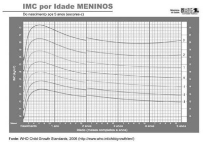
A Peso elevado para a idade.
B Obeso.
C Eutrófico.
D Risco de sobrepeso.
E Sobrepeso.
Questão 50 · Diagnóstico Nutricional · 4000023935Paciente de 12 anos, do sexo masculino, trazido ao ambulatório pelos pais para consulta de rotina. Sem queixas, desenvolvimento neuropsicomotor adequado, cartão vacinal em dia com as recomendações da Sociedade Brasileira de Pediatria. Ao exame físico, peso = 50 kg, estatura = 145 cm, índice de massa corporal (IMC) = 23.78 kg/mg², pressão arterial = 118 x 75 mmHg. Em relação ao IMC, o paciente apresenta-se:


A Desnutrido
B Eutrófico
C Com sobrepeso.
D Obeso.
Questão 51 · Diagnóstico Nutricional · 4000023913Paciente de 12 anos, do sexo masculino, trazido ao ambulatório pelos pais para consulta de rotina. Sem queixas, desenvolvimento neuropsicomotor adequado, cartão vacinal em dia com as recomendações da Sociedade Brasileira de Pediatria. Ao exame físico, peso = 50 kg, estatura = 145 cm, índice de massa corporal (IMC) = 23.78 kg/mg², pressão arterial = 118 x 75 mmHg. Em relação à estatura, o paciente apresenta-se com

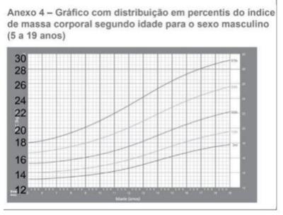

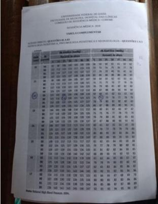
A baixa estatura.
B estatura em canal de vigilância.
C estatura adequada à idade e ao sexo.
D estatura acima da média para idade e sexo.
Questão 52 · Diagnóstico Nutricional · 4000022603De acordo com as curvas de crescimento da Organização Mundial de Saúde, uma criança do sexo masculino, com 6 anos e 5 meses de idade, com índice de massa corpórea (IMC) entre o escore Z + 1 e + 2 é classificada como:
A Risco de sobrepeso.
B Eutrofia.
C Sobrepeso.
D Obesa.
E Magreza.
Questão 53 · Obesidade · 4000019006De acordo com as curvas de crescimento da Organização Mundial de Saúde, uma criança do sexo masculino, com 6 anos e 5 meses de idade, com índice de massa corpórea (IMC) entre o escore Z + 1 e + 2 é classificada como:
A Risco de sobrepeso.
B Eutrofia.
C Sobrepeso.
D Obesa.
E Magreza.
Questão 54 · Diagnóstico Nutricional · 4000017831R.G.R., uma criança de 7 meses de idade, foi levada pelos pais a um pronto atendimento infantil com quadro de tosse e secreção nasal há cerca de 10 dias, com o desenvolvimento de febre, nos últimos 2 dias, e respiração rápida. Ao exame físico, foram observados uma orofaringe com hiperemia discreta, linfonodos cervicais normais, otoscopia normal bilateral, ausculta pulmonar com estertores crepitantes à esquerda, palpação abdominal normal, ausência de sinais de irritação meníngea e inexistência de alterações dermatológicas. A frequência respiratória foi de 52 incursões por minuto. Não havia presença de tiragem subcostal, nem de insu ciência ventilatória, nem de cianose. A paciente consegue alimentar-se ao seio materno com pouca di culdade. A saturação periférica de oxigênio é de 96%. A radiogra a de tórax demonstra área de consolidação em lobo inferior esquerdo e derrame pleural de cerca de 1,5 cm. R.G.R., após a resolução de seu quadro de saúde, foi levada por seus pais para um atendimento rotineiro de puericultura, agora com 9 meses de idade, com o médico de família e comunidade do posto de saúde próximo à casa deles. Os pais estão realizando, na criança, a introdução alimentar de forma adequada, associada a 600 mL de fórmula láctea apropriada para a idade. A criança não está em uso de qualquer medicação ou suplemento. A respeito do caso clínico apresentado e de conhecimentos médicos correlatos, julgue o item a seguir. Caso a paciente encontre-se entre o escore Z +2 e +3 da curva de peso para estatura e IMC para sua idade, seu diagnóstico nutrológico será de sobrepeso.
A Certo.
B Errado.
Questão 55 · Diagnóstico Nutricional · 4000125104Qual é a classificação antropométrica de um menino de 4 anos de idade com os seguintes escores-Z: peso para a idade = - 0,68; estatura para a idade = -2,46; IMC = +1,46?
A Baixo peso, baixa estatura e sobrepeso.
B Peso adequado, baixa estatura e risco de sobrepeso.
C Peso adequado, estatura adequada e obesidade.
D Baixo peso, baixa estatura e magreza.
E Peso adequado, estatura adequada e eutrofia.
Questão 56 · Obesidade · 4000108220Assinale a alternativa CORRETA. De acordo com os índices antropométricos e pontos de corte recomendados pela Organização Mundial da Saúde e adotados pelo Ministério da Saúde na avaliação do estado nutricional, crianças na faixa etária de 0 a 5 anos incompletos com valores do Escore Z do Índice de Massa Corpórea (IMC) > +2 e ≤ +3 são classificadas como:
A Risco para Sobrepeso
B Sobrepeso
C Obesidade
D Obesidade Grave
Questão 57 · Gráf icos OMS Classif icação nutricional · 4000097226Paciente do sexo feminino, com seis anos e seis meses, em consulta com pediatra, apresenta IMC = 18. Analise o gráfico a seguir: Com base nas informações apresentadas, é CORRETO afirmar que a paciente está:
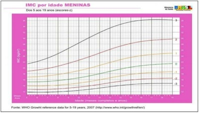
A Obesa.
B Eutrófica.
C Com sobrepeso.
D Com obesidade grave.
Questão 58 · Diagnóstico Nutricional · 4000081061Em decorrência da alta frequência de obesidade e de excesso de peso entre crianças e adolescentes, o diagnóstico do estado nutricional deve fazer parte da avaliação de rotina. Para confirmar o diagnóstico de obesidade em criança com 5 anos ou mais:
A O IMC deve ser "maior ou igual a" 20 kg/m².
B O IMC deve estar acima do Z-score +2 para sexo e idade.
C O peso deve estar acima do Z-score +2 para sexo e idade.
D O peso deve estar acima do Z-score +1 para sexo e idade.
Questão 59 · Diagnóstico Nutricional · 4000058394João Pedro tem 8 anos, procurou a Unidade Básica de Saúde (UBS) com sua mãe, pois está preocupado com sua altura. Ele é um dos menores da sala. Tem boa alimentação e pratica judô 2 vezes por semana. Sua mãe tem 160cm e seu pai 170cm. Vendo a carteirinha de saúde o médico observou que cresce em média 5 cm ao ano. Atualmente está com 121cm (z-escore -1) e peso 21 Kg (entre z-escore -1 e -2). Qual sua classificação de altura seguindo as curvas da Organização Mundial da Saúde?
A Baixa estatura para idade.
B Estatura adequada para idade.
C Muito baixa estatura para idade.
D Eutrófico
E Magreza
Questão 60 · Gráf icos OMS Classif icação nutricional · 4000123064Uma criança de 8 anos com o diagnóstico nutricional entre os percentis 15 e 3 de índice de massa corporal pode receber duas possíveis classificações, respectivamente pela Organização Mundial da Saúde e pela Sociedade Brasileira de Pediatria, de:
A Eutrofia e eutrofia.
B Eutrofia e vigilância.
C Eutrofia e risco nutricional.
D Vigilância e eutrofia.
E Eutrofia e vigilância nutricional.
Questão 61 · Gráf icos OMS Classif icação nutricional · 4000111110Segundo o Ministério da Saúde, uma criança com idade abaixo de 5 anos, com escore Z do Índice de Massa Corpórea (IMC) entre +1 e -2 é classificada como: Respostas: 1 12 23 34 45 56
A Eutrófica.
B Baixo peso.
C Risco de sobrepeso.
D Sobrepeso.